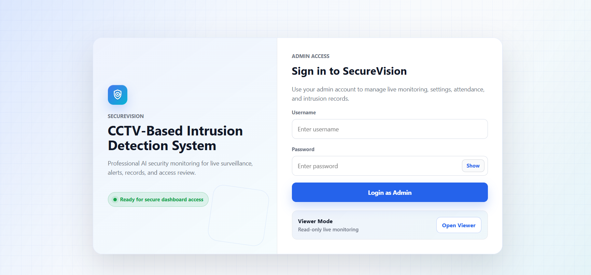
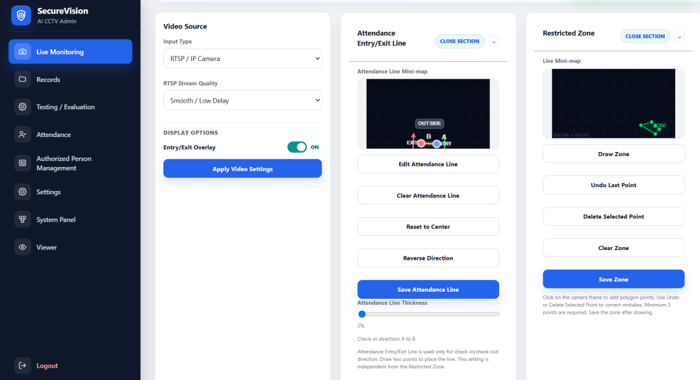
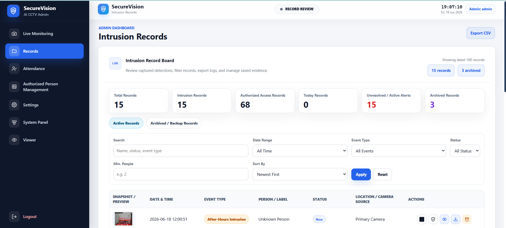
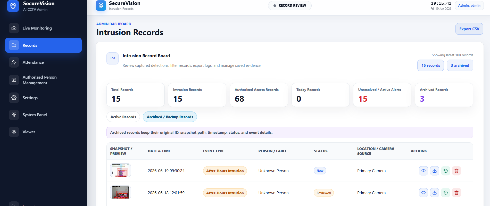
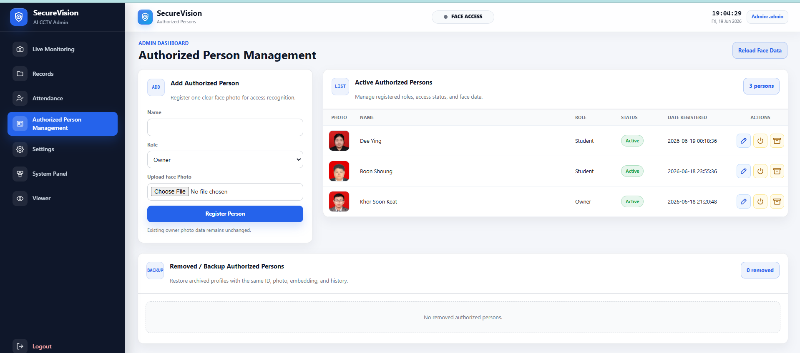
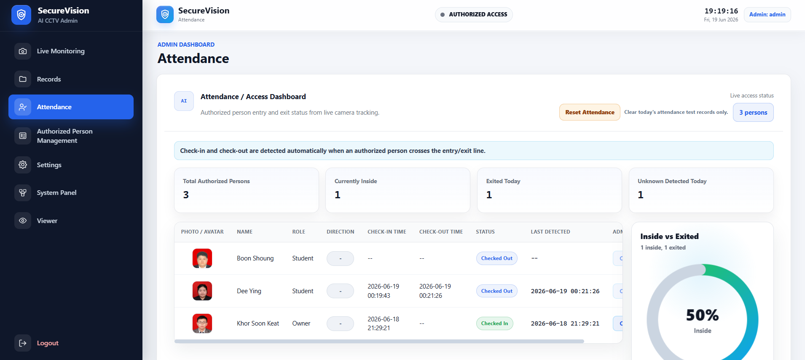
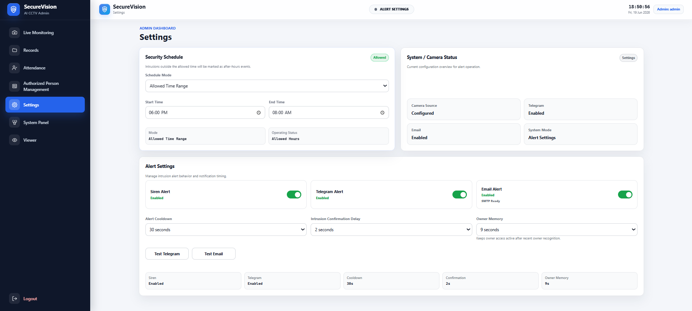
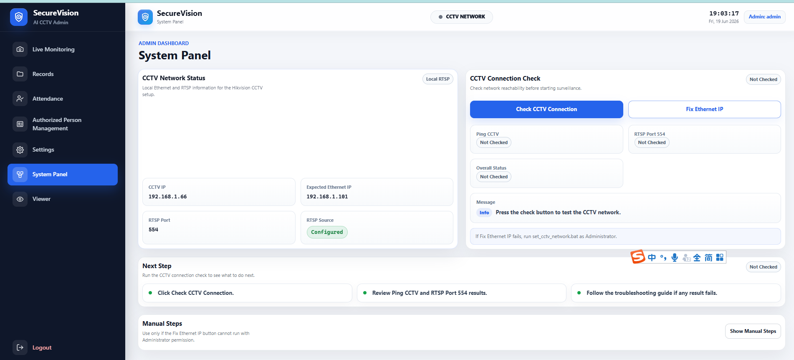
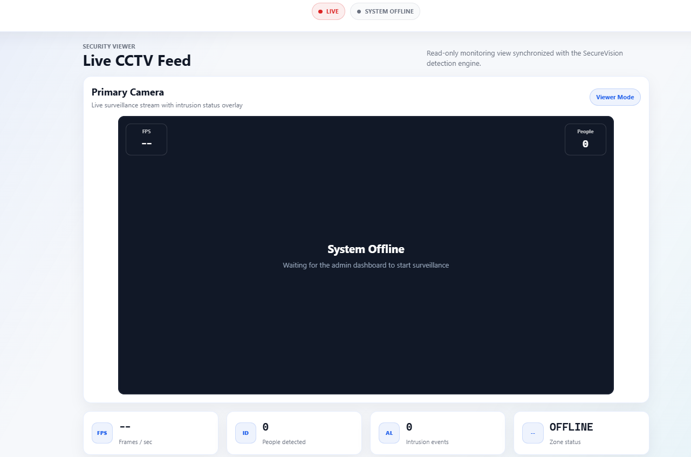

Technologies Used
- Python
- Flask
- YOLOv8
- FaceNet
- MediaPipe
- OpenCV
- SQLite
- Telegram Bot
Project Details
AI-powered CCTV monitoring and intrusion detection system
SecureVision is my Final Year Project (FYP), a CCTV-based intrusion detection system that brings AI-assisted surveillance and access monitoring into a Flask web dashboard. It combines person detection and face recognition to support monitoring of restricted areas and identification of authorized people. Administrators can configure camera sources and security settings, review intrusion snapshots and archived records, manage authorized profiles, and track attendance. A separate read-only viewer dashboard provides access to the monitoring feed.
System Screenshots
Original screenshots of the monitoring dashboard, intrusion records, access management, and system settings. Select an image to view it at a larger size.








